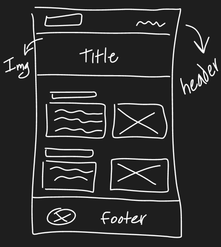
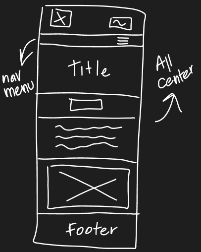
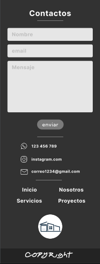
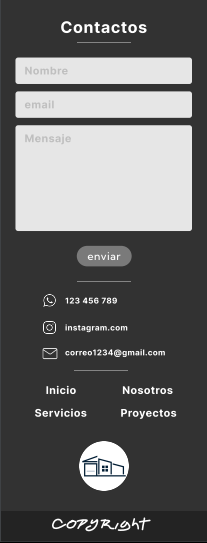

Acompáñame a ver el progreso de mi primera pagina web
Para este proyecto empecé con un simple sketch sobre mí página web, ya tenía la idea que desde un principio fue hacerle la página web a la empresa de construcción de mi padre
Desktop View
Mobile View
Después de haber definido el sketch, pase a la compu, agarre Figma y me puse a definir con más exactitud los diseños del sitio web, tanto para desktop como para mobile, cada página, cada sección...
Desktop View
Mobile View
 

Una vez terminado los wireframes procedí a plasmar la visión en código, intentando alcanzar lo más posible a los diseños. No fue fácil al principio por la falta de experiencia, pero de a poco le fui agarrando la mano :), aunque aún queda bastante por aprender
Veamos el proceso de las páginas respecto a cada entrega. Haciendo pequeños cambios y mejoras
Desktop View
Pequeños cambios en el proceso. Como la sección de servicios que en vez de hacer una página específica donde se redireccionaría a otra con el servicio, decidí saltear la página de servicios y acceder desde la página principal. De manera más practica
Ahora algo interesante... Veamos la comparación entre los wireframes y el resultado final, incluyendo la vista desktop y la vista mobile
Desktop View